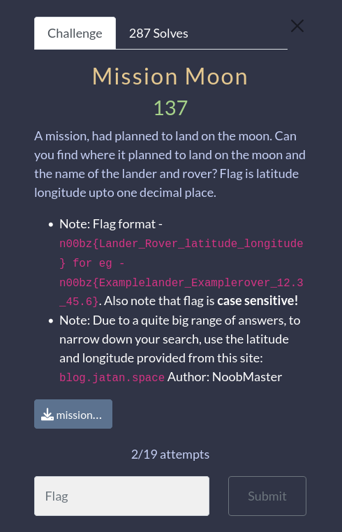

A few challenges for the **n00bzCTF23**

#OSINT

Downloading the mission_moon.webp file we get this picture.

If we utilize google's image search we can look for any images of this picture that google has info on.

Since our challenge told us to use the longitude and latitude from `blog.jatan.space` we will find image source and use that blog for the info


Searching on that blog post we find all the information we need to craft our flag


`**n00bz{Vikram_Pragyan_70.9_22.8}**`

Downloading the dam.png we get this picture.

We will use `TinEye` for this one.


I then looked up what city the nova kakhovka dam was in.

Come to find out the flag was `**n00bz{Nova_Kakhovka}**`

We are going to do the same process, download the file and use google image search.


The picture is a little distorted so it's hard to tell if this is a match but let's examine the picture for any thing that stands out. Immediatly my eyes went to this building.

Looking at the google result we can see the same building and the golden gate bridge in the background so this has to be the spot.


Now looking back at the google result we see there's also and address from where this picture was taken `1200 kearny st. so let's google map this address and get our flag.

`**n00bz{Vallejo_Steps}**`

If we search for the username `brayannoob` on google we dont get much useful information. But if we search Github we actually find a user under that name.

If we check out the recent commits we can see the recent changes made to this repository. And we see there was a change made yesterday.

Digging into this commit we see a new username `brayan234`

From the name of this challenge it reminds me of the website `Tryhackme.com`. Let's look for brayan234 on Tryhackme.com

And we now have the flag. `**n00bz{y0u_p4ss3d_th3_ch4ll3ng3_c0ngr4tul4t10ns_7c48179d2b7547938409152641cf8e}**`
**I didn't get to solve this challenge in time... I was under the impression I needed to login as the credentials were different**
**Then they updated challenge with 2 hints and new creds. By the time I tried again the CTF was over**


#Forensics
This was a forensics challenge where we have to crack a few passwords.

First we download the `flag.zip` file and if you try to unzip you will need a password.

Since we dont have the password we will try to crack the password using a tool called `fcrack`

And we get a password. Let's unzip this file.

It's a .pdf file thats also password protected.

Let's crack this password also, we will use `john` aka JohnTheRipper.
First we will make a hash of the .pdf file using `pdf2john` and write that to a new file called pdf.hash.

Next we will run `john` with a password list against the pdf.hash

And we get a password to unlock flag.pdf